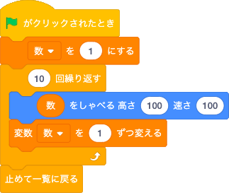

変数を作ろう
変数とは１つだけデータを入れておける箱のようなものです。
入れられるデータは数、文字です。
それでは「数」という名前の変数を作ってみよう。
1から10までの数を読み上げよう
1から10までカウントアップするプログラムを作ります。
変数の処理に関係するブロックは、「変数」で変数を作成すると一緒に出てきます。
このブロックは変数にデータを入れるブロックです。
変数に入れられるのは数、文字、またはそれらを出力するブロックです。
このブロックは変数に数が入っているとき、その数を指定した値だけ増減するブロックです。
増やしたいときはそのまま値を入力し、減らしたいときは「-5」のように入力します。
入力できる値は数と数を出力するブロックです。
次のプログラムを作ろう。

10から1までカウントダウンするプログラムを作ってみよう。
奇数か偶数かを答えるプログラムを作ろう
1から10までのランダムな数を作り、それが奇数か偶数かを答えるプログラムを作ります。
奇数、偶数の判別にはあまりのブロックを使います。
このブロックは緑の「演算」にあります。
左の値を右の値で割った時のあまりの数を出します。
入力できる値は数、他のブロックです。
ランダムな数を変数「数」に入れて記憶しておくことで、同じ数を複数の場所で使えるようにしています。
また、ランダムな数を2で割ったとき、あまりが0だと偶数、それ以外だと奇数という判別方法を用いています。
それでは次のプログラムを作ろう。
1から10までのランダムな数を作り、それが3の倍数かそうでないかを答えるプログラムを作ってみよう。